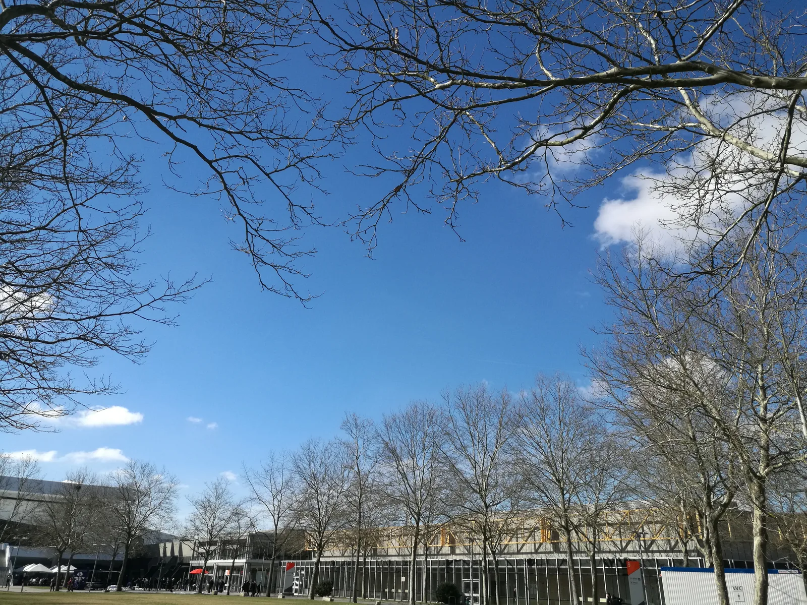
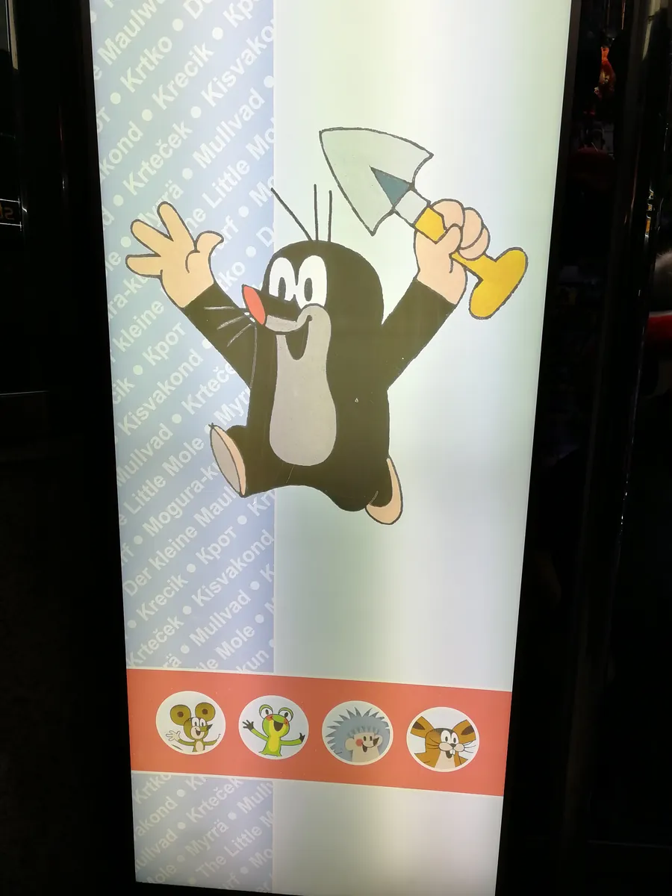
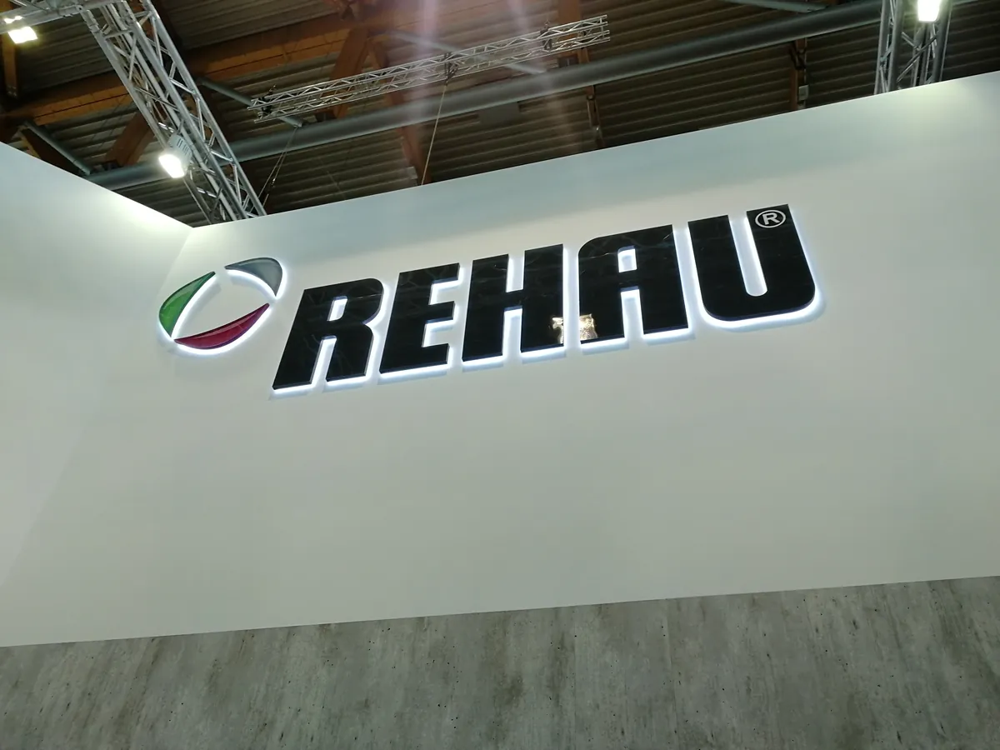
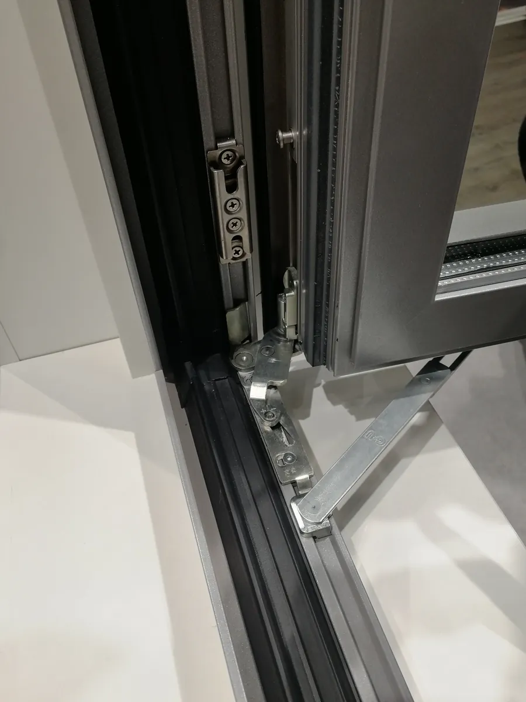
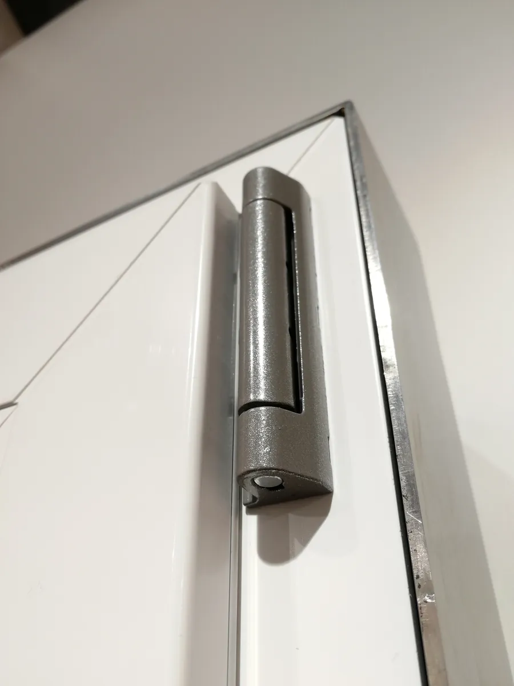

纽伦堡：第三次站在这里，看到的不再只是产品，是中国企业的腰板
Nuremberg, the third time — no longer just products, but the backbone of Chinese companies.

（2018 年 · 德国 · 纽伦堡 · FENSTERBAU FRONTALE 第三次回访）
这是第三次站在纽伦堡的展馆里。2012 年第一次来，看的是产品和标准；2016 年这次（其实 2014 年也去过，只是没有单独成篇），诺托在旁边搭了一大片帐篷办诺托之夜，吃着烤猪肘子喝啤酒；2018 年这一次，画面完全不一样了——你背后立着的是刚刚正式登台的 Roto NX。
Roto NX：憋了七年的一次「全系统」重做
Roto NX 是诺托历史上最大的一次五金系统革新，2017 年 11 月率先对外发布，但真正大规模地「登台亮相」、接受全球客户和经销商检验，是 2018 年 3 月 21 日到 24 日这届纽伦堡展会——你拍的那张背景照片，很可能就是它的全球公开市场首秀现场。诺托这次的展位主题围绕「经济性、安全性、舒适性、设计感」四个方向铺开，核心就是主推 Roto NX 这套「再次定义行业标准」的平开上悬窗五金系统。你说这次「系统窗多了很多项目」，这个判断很准——Roto NX 最大的特点就是用一套统一的核心平台，去覆盖塑钢、木质、铝合金等不同框架材质的窗型需求，零部件通用率大幅提高，这意味着诺托能用一套系统同时服务更多细分产品线，展台上项目和产品的数量自然比往届密集得多。这也算是给之前那篇《诺托第三次回访》里埋的伏笔一个交代——2016 年你在总部看到的还是「营收下滑、逆周期并购」的诺托，两年之后，它真正拿出了憋了几年的那张产品底牌。


展馆里的中国企业：从「来看」到「来站」
比产品更让你有感触的，是这次展会上越来越多的中国企业——不只是来逛展、来采购，是真正参展、设欧洲分公司。这个变化背后有几个客观的数字支撑：2018 年这届 FENSTERBAU FRONTALE 吸引了来自 40 多个国家的 814 家参展商，超过 11 万名专业观众到场，规模是历届里数得上的一次高峰。放在这个背景下看，中国企业能挤进这个全球门窗幕墙行业最顶级的展会舞台，本身就说明这些企业已经具备了和欧洲同行同台竞技的产品和资金实力——你说这是中国企业「腰板硬了」，这个判断很实在，能在纽伦堡租下展位、把产品摆在欧洲客户面前，门槛从来不低。


但「上台阶」和「该往哪走」是两件事
你提出了一个挺值得记录的判断：参加纽伦堡展会、能在欧洲设分公司，确实标志着企业上了一个台阶，欧洲市场至今仍然是这个行业公认的技术高地；但对大多数中国企业来说，出海的第一步未必应该是欧洲——更合适的路径是先去东南亚，把产品和管理能力在文化、成本结构更相近的市场里跑通，再考虑往欧美、非洲或者拉美这些难度更高、门槛更复杂的市场走。
站上全球技术最高地会让人兴奋，但最高水平从来不等于最适合你迈出的第一步——出海要按难度台阶，一级一级往上走。
——董立鑫 海鑫汇创始人兼执行总裁，新加坡世贸秘书长兼首席运营官
写在最后
三次站在同一个展馆里，产品在变（从传统五金到 Roto NX），身边的参展商结构也在变（中国企业越来越多），但你自己作为一个海外考察者的判断反而越来越冷静——不是「看到欧洲什么都好、赶紧冲过去」，而是开始替后来者想清楚「这条路该怎么走、先走哪一步」。这大概也是这么多年反复回到同一个展馆最大的收获：看的次数够多之后，人会从「被这个行业的高度震撼」，变成「能给别人指一条更合适的路」。
本文整理自董立鑫（Bruce Dong）海外产业考察记录，首发于海鑫汇。